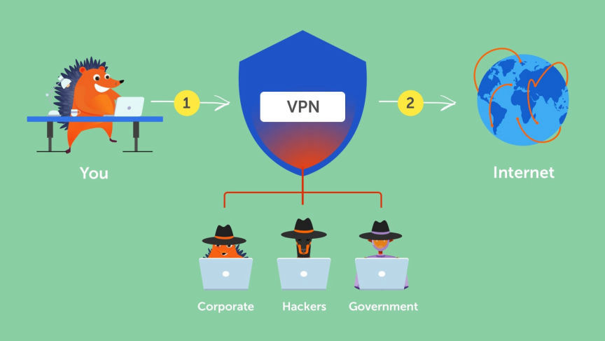

The Hitchhiker's Guide to VPNs

VPNs provide you with security and privacy by hiding your location by hiding your real IP address from the sites that you visit, protecting you from surveillance by your ISP, encrypting your data and protecting you when you use public WiFi networks, and helping you circumvent censorship.
There are tons of VPN providers to choose from. You should focus on selecting a VPN provider that meets your security needs.
Some of the most important factors to consider when selecting a VPN include;
VPN Protocols Implemented
A VPN protocol determines how data is encrypted and treasured between your device and the VPN's servers. VPN protocols are used to provide stable and secure connections.
Good VPN providers provide strong protocols such as WireGuard and OpenVPN.
WireGuard
WireGuard is the latest VPN protocol. It is open source and uses cryptography in its encryption, making it one of the fastest and most secure protocols available.
OpenVPN
The most popular protocol. It is open source and is made up of configurable authentication, handshake, and encryption parts. You can configure the encryption schemes of these parts to your ideal settings to meet your security needs.
OpenVPN can bypass most restrictions and firewalls.
Privacy
Reputable VPN providers should be able to provide you with their services without collecting unnecessary information that could put your privacy and security at risk.
They should for example not collect personal information during registration. They also must accept anonymous forms of payment i.e. cash or anonymous cryptocurrency such as monero.
Security
The main reason for using a VPN is to secure your online activities. Worthwhile VPN providers ensure their services implement the latest and most secure encryption schemes by default.
The ideal Encryption Schemes for OpenVPN are: SHA-256 for authentication; at least RSA-2048 for handshake; and
AES-256-GCM for data encryption.
They should also implement additional security features such as:
- Independent Third-party Audits Most VPNs are far from what their providers claim they are. The only way one can verify their claims is by reviewing reports of security audits conducted by reputable third-party firms.
- Killswitch Support A Killswitch automatically disconnects your internet connection when you lose connection to the VPN.
- Multihop Support Multihopping toutes your data through multiple servers. This increases the security of your data in case of a single server compromise.
- Perfect Forward Secrecy (PFS) support PFS is a process through which the encryption scheme frequently and automatically generates new encryption keys to provide increased security in case you get compromised.
Reports from audits disclose security vulnerabilities that a VPN may have. The audits should be able to verify the no-logging claims made by most VPN providers.
Transparency
To be able to trust A VPN provider with your internet data, the provider should be open about their ownership and leadership.
Trustworthy providers should be transparent about how they handle government requests. They should also provide regular reports regarding government requests if they receive any.
Good VPN providers should also be transparent in their marketing. Transparency in marketing can be demonstrated by providing educational information on privacy and anonymity including on the limitations of VPNs and when use of Tor.
Additional Features
Other factors you could consider include adblocking, warrant canaries, ease of use, customer support, the number of allowed simultaneous connections, etc.
Recommended VPNs
Mullvad
Mullvad is a VPN provider based in Sweden that focuses on transparency and security. Mullvad has servers in 43 countries.
- Independently Audited One of the most recent audits on the security of Mullvad's VPN infrastructure was done by Assured AB between April and June 2022. The report was published in June.
- Open-source The source code for all of Mullvad's desktop and mobile clients is available on GitHub.
- Anonymous Accounts In addition to not collecting any personal information during account creation, Mullvad accepts and encourages its users to pay with Monero and cash/local currency as anonymous forms of payment.
- WireGuard and OpenVPN Support Mullvad supports both WireGuard and OpenVPN protocols. WireGuard is used by default or only protocol on Mullvad's Android, iOS, macOS, and Linux apps. Windows users have to manually enable WireGuard.
- Kill switch Mullvad has a kill switch that stops all internet connections when you experience connection issues while using the VPN.
The audit found multiple security issues ranging from "low" to "medium" in their severity. Mullvad made improvements aimed at resolving the identified issues.
The audit also found that Mullvad neither leaks nor logs its users' data.
Atredis Partners also conducted a security audit of Mullvad's VPN apps and released the report in October 2022.
Quote:The Report's Key Conclusions
Overall, Atredis Partners found the Mullvad VPN clients to be well-architected from a security perspective, with limited attack surface that could be reached by an external malicious party, and important protection mechanisms were in place to prevent most unintended traffic leaks.
Atredis Partners detected a few edge cases where traffic could be accidentally leaked outside the VPN tunnel. These leaks were either patched quickly by the Mullvad team or were due to the operating system itself, in which case the Mullvad team updated documentation and submitted issues to the operating system vendor where appropriate.
As in any security assessment, some areas for improvement were noted, but overall Atredis
Partners would rate the Mullvad VPN clients as sound from a security perspective.
You can access Mullvad's website via Tor through their onion address.
IVPN
IVPN is another transparency and security-focused VPN provider. IVPN is based in Gibraltar and has services in 35 Countries.
- Independently Audited IVPN went through its fifth annual security audit in February 2023. The audit by Cure53 focused on penetration tests and configuration review of IVPN's VPN gateway server and source code-assisted penetration tests against IVPN's server OS and OS setup. The three security vulnerabilities, two "low" and one "medium", found during the audit were fixed.
- Open-source You can obtain the source code for all of IVPN's VPN clients from GitHub.
- Anonymous Accounts Generating an account on IVPN does not require any personal information.
- WireGuard and OpenVPN Support IVPN supports WireGuard and OpenVPN protocols.
- AntiTracker Functionality IVPN's Pro package comes with an antiTracker. It blocks advertising networks and trackers.
- Multi-hop Functionality IVPN's Pro users also get access to the multi-hop feature that increases their privacy by connecting through multiple servers in different countries.
- Warrant Canary IVPN has a warrant canary page with a signed message that is updated once every month.
Cure53 conducted a no-logging audit of IVPN in 2019. As disclosed in the report, the audit found that IVPN's no-logging claims are valid.
IVPN also accepts Cash and Monero as anonymous forms of payment.
IVPN uses WireGuard by default on all of its VPN clients.
Using a reputable VPN provider will significantly increase your online security and privacy. Using a VPN should not stop you from taking additional measures to protect yourself.
VPNs do not provide you with anonymity, when looking for anonymity just use Tor.